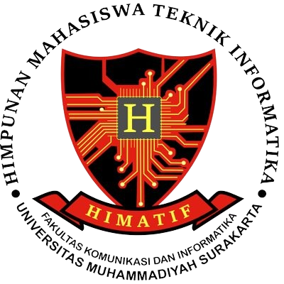

Skills
HTML
Python
SQL
Java
Figma
Experience

Jan 2025 - Now
Kepala Bidang Keilmuan dan Penelitian
Himpunan Mahasiswa Teknik Informatika

Sep 2024 - Present
Programming Algorithm Laboratory Assistant
University of Muhammadiyah Surakarta
Jan 2024 - Jan 2025
Anggota Bidang Keilmuan dan Penelitian
Himpunan Mahasiswa Teknik Informatika

Jan 2024 - Now
Anggota Divisi Keilmuan dan Riset Teknologi
Forum Open Source Teknik Informatika